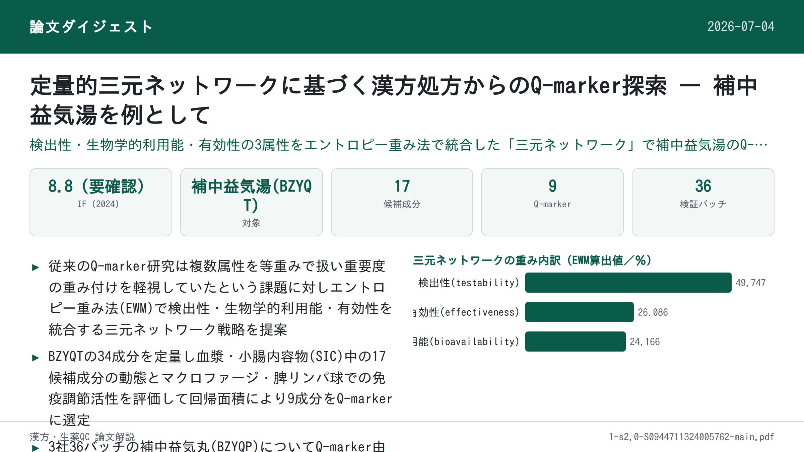
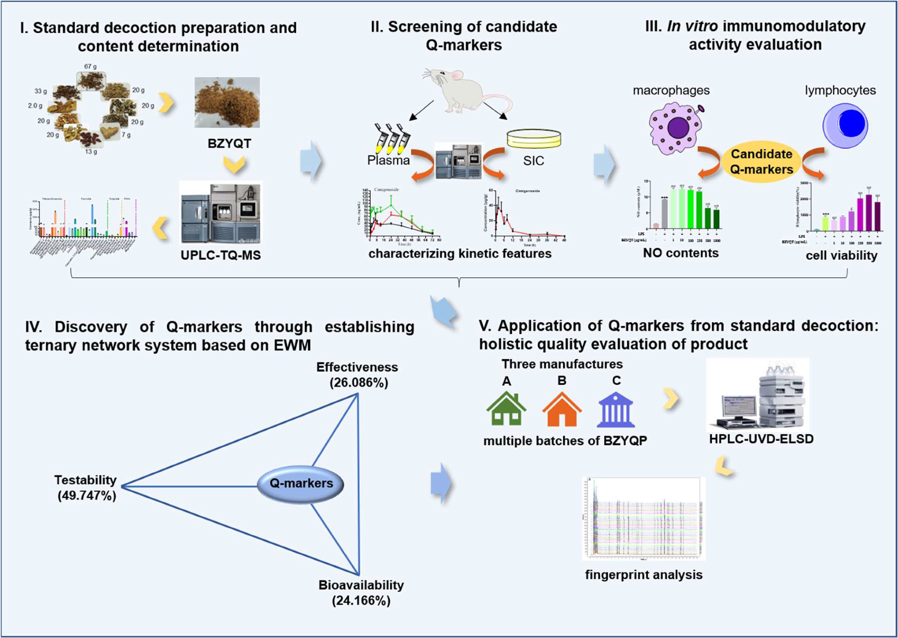
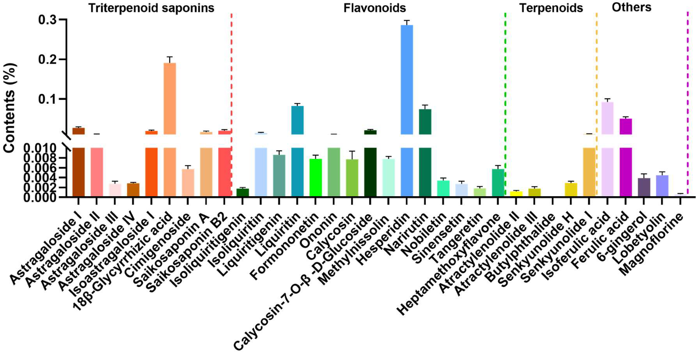
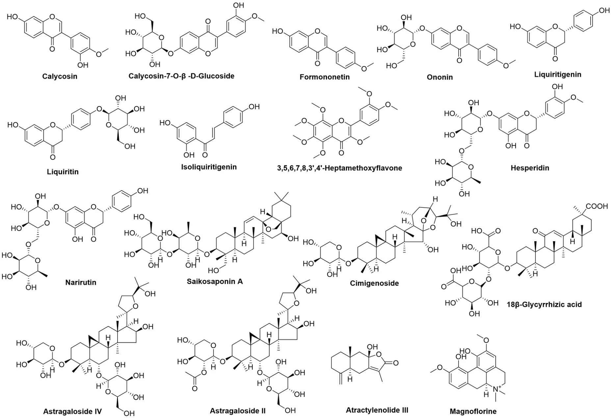
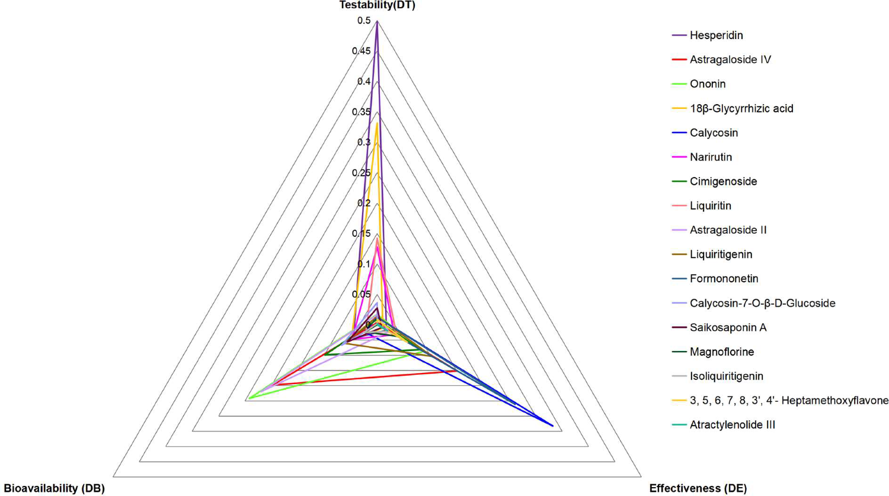

定量的三元ネットワークに基づく漢方処方からのQ-marker探索 — 補中益気湯を例として

<!-- 方針: ほぼ全訳＋必要に応じた補足。原文構成に沿って訳出。「> 補足:」は訳者注。原文の節見出しは英語原題の直訳＋日本語見出しを併記。 -->
書誌情報
- 原題: Quantitative ternary network-oriented discovery of Q-markers from traditional Chinese medicine prescriptions: Bu-Zhong-Yi-Qi-Tang as a case study
- 著者: Liufang Hu, Guotao Chen, Jiali Chen, Zhenyu Zou, Yuan Qiu, Jing Du, Xupeng Tong, Jiaxu Chen, Xinsheng Yao, Pei Lin, Liangliang He, Zhihong Yao*（暨南大学薬学院・国際共同実験室（中医薬現代化・イノベーション創薬, 教育部）／広東省中薬薬効物質・新薬研究重点実験室／生物活性分子・成薬性評価国家重点実験室、暨南大学中医学院・広州市方剤重点実験室、同仁堂科技発展（北京）、杭州晨風軽行科技, 中国）
- 掲載誌・巻号・DOI: Phytomedicine 133 (2024) 155918. https://doi.org/10.1016/j.phymed.2024.155918
- インパクトファクター: 約8.8（Phytomedicine, JCR 2024 / Clarivate。ウェブ検索で複数の二次情報源が8.81と報告しているが、Clarivate公式のJournal Citation Reportsで直接確認できていないため要確認とする）
- 受理経過: 受領 2024-05-03 / 改訂 2024-07-04 / 採録 2024-07-26 / オンライン公開 2024-07-31
補足: BZYQT = 補中益気湯（Bu-Zhong-Yi-Qi-Tang）。700年以上前の医書『脾胃論』に記載される古典的漢方処方で、日本では「補中益気湯」、韓国では「Bojungikki-tang」として用いられる。BZYQP = 補中益気丸（Bu-Zhong-Yi-Qi-Pill、BZYQTの市販製剤）。SIC = 小腸内容物（small intestinal contents）。EWM = エントロピー重み法（entropy weight method）。Q-marker = 品質マーカー（quality marker）。本論文は成分定量＋薬物動態＋in vitro活性評価＋数理モデル（三元ネットワーク）を統合した実験研究論文。
要旨（Abstract）
背景: 漢方（TCM）処方に対するQ-marker（品質マーカー）の提唱は、TCM処方の品質管理における新たな研究領域である。しかし、複数属性を持つQ-markerに関する従来の探索的研究は一貫して重みの考慮を怠っており、各属性の重要度を正確に測ることを妨げ、Q-markerの理解を誤らせる可能性がある。
目的: 本研究では、TCM処方からQ-markerを視覚的に発見するために定量的三元ネットワーク戦略を初めて提案し、古典的TCM処方である補中益気湯(BZYQT)の品質管理研究にこれを適用した。
方法: まず、BZYQT中の34成分の含量、および生体試料（血漿・小腸内容物）中の17候補Q-markerの動態的特徴を、UPLC-QqQ-MS/MSにより特性評価し、マクロファージおよび脾リンパ球における免疫調節活性も評価した。次に、得られたデータを検出性(testability)・生物学的利用能(bioavailability)・有効性(effectiveness)の3属性に統合し、エントロピー重み法によりそれぞれの重みを算出して、Q-markerを定量的にスクリーニングするための三元ネットワークを構築した。続いて、同定されたBZYQTのQ-markerを用いて、3社が製造する補中益気丸(BZYQP)の商業製剤36バッチについて、Q-marker由来フィンガープリントの類似度評価により、その全体的な品質評価を行った。
結果: 検出性・生物学的利用能・有効性という3つの中核属性を示す9化合物（ヘスペリジン、アストラガロシドIV、オノニン、18β-グリチルリチン酸、ナリルチン、カリコシン、シミゲノシド、アストラガロシドII、リクイリチン）が、三元ネットワークの回帰面積の順位に基づきBZYQTのQ-markerとしてスクリーニングされた。Q-markerを共通ピークとして用いた場合、36バッチのBZYQPの類似度はHPLC-UVDモードで0.914〜0.998、HPLC-ELSDモードで0.631〜1.000であり、従来の共通ピークで評価した類似度（HPLC-UVDモード: 0.946〜0.990、HPLC-ELSDモード: 0.957〜0.997）より低い値であった。この結果は、同定されたQ-markerが、異なる製造業者によるTCM関連製品の全体的な品質評価のためのクロマトグラフィーフィンガープリントにおいて、共通ピークとしてより代表性が高いことを示唆している。
結論: BZYQTからのQ-markerの定量的な発見は、その関連商業製品の全体的な品質評価にとって重要な基盤を築いた。本研究は、TCM処方の一貫性と有効性を確保するための新たな戦略を提供するものである。
補足: 略語（原文Abbreviations）: BZYQT=補中益気湯、BZYQP=補中益気丸、SIC=小腸内容物、EWM=エントロピー重み法、TCM=中国伝統医学、ConA=コンカナバリンA、LPS=リポ多糖、LLOQ=直線性・定量下限。

1. 序論（Introduction）
中華文明の宝である漢方（TCM）処方は、数千年にわたり疾病の予防・治療において重要な役割を果たしてきた。特にCOVID-19パンデミック下では、治癒率の向上や罹病期間・死亡率の低減における有効性から、世界的に注目を集めている(Huang et al., 2021)。しかしTCMは「多成分・多標的」という特性を持ち、複数の慢性・複雑な疾患の治療において信頼性がある一方、有効成分・作用機序の不明確さや品質管理の不十分さといった限界から、その標準化・国際化は大きな課題に直面している(He et al., 2021)。これを踏まえ、TCMの品質標準体系を強化するために品質マーカー(Q-marker)の概念が提唱された(Liu et al., 2016)。Q-markerとは、TCM飲片・煎剤・エキス・製剤などのTCMおよびその製品に見出される固有の化学成分であり、TCMの機能特性と密接に関連し、品質管理における安全性・有効性評価の指標物質として効果的に機能するものである。
Q-marker概念の提唱以降、ネットワーク薬理学、薬効学、フィトケミカル、薬物動態学、Chinmedomics、「蜘蛛の巣(spider-web)」モード、「レーダーチャート」モードなど、TCMまたはTCM処方におけるQ-markerを同定・判別するための複数の戦略が提案・応用されてきた(Yeqing et al., 2022; Chu et al., 2022; Wang et al., 2023; He, et al., 2021; Zhang et al., 2021, 2020)。これらの戦略はTCM処方からQ-markerを発見することに成功し、新たな視座と参照を提供してきたが、なお注意すべき点がある。特に強調すべきは、複数属性を持つQ-markerに関する従来の探索的研究が、一貫して重みの考慮を怠ってきたという点である。この見落としは、各属性の重要度を正確に測ることを妨げ、Q-markerの理解を誤らせる可能性がある。さらに、多くの研究は主に吸収成分に着目する一方、腸内細菌叢の調節や腸管への直接作用を通じて間接的な効果を及ぼしうる腸内容物中の異物成分（xenobiotics）をしばしば無視しており、生物活性成分の除外につながっている。特に消化器系の失調を改善するTCM処方については、腸管内に存在する成分についても考慮が必要である。
補中益気湯(BZYQT)は700年以上の歴史を持つ著名なTCM処方であり（医書『脾胃論』に記載）、下痢、慢性閉塞性肺疾患、喘息、子宮脱など、消化器・呼吸器・泌尿生殖器系疾患の改善に広く用いられてきた(Hu et al., 2019, 2022)。その配合は、君薬：黄耆；臣薬：甘草・白朮・党参；佐薬：当帰・陳皮；使薬：升麻・柴胡・大棗・生姜からなる。BZYQTはその薬効と健康効果により高く評価され、中国国外にも広く普及している。日本では「補中益気湯（Hochuekkito）」、韓国では「Bojungikki-tang」と呼ばれ、術後に疲労・食欲不振を経験する患者の栄養状態を改善する強壮剤として広く知られている(Kiyohara et al., 2006; Lee et al., 2012)。現代の薬理学研究により、BZYQTは抗ウイルス作用(Takanashi et al., 2017)、抗炎症作用(Yang et al., 2015)、抗菌作用(Yan et al., 2002)、免疫調節活性(Kao et al., 2000; Liu et al., 2019)を示すことが実証されている。BZYQTの広範な臨床応用を踏まえ、丸剤・顆粒剤・内服液などの関連製剤が中国で開発され、いずれも中国薬局方に収載されている。しかし、BZYQT関連製剤の現行品質規格はアストラガロシドIVのみを定量指標とすることに依存しており(Commission, 2020)、これは有効性・安全性を保証するには程遠い。さらに、既存研究はBZYQTの製剤そのものよりも物質的・生物学的基盤に主眼を置く傾向があった。したがって、BZYQTに基づく適切なQ-markerの発見は、BZYQT関連製剤の包括的な品質評価の指針となるため、大きな意義を持つ。
我々の先行研究では、BZYQT中の化学成分161種、および生体試料（血漿・尿・糞便）中のBZYQT関連異物成分162種が特性評価され、フラボノイド類とトリテルペノイド類が血漿中の生物学的利用可能成分の重要な部分を占めることが示された(Hu, et al., 2019; Liu, et al., 2019)。さらに、poly(I:C)誘発性肺炎症および腸管パイエル板に対するBZYQTの免疫調節活性が実証されており、これには肺への好中球浸潤の減少、B リンパ球数の増加、マクロファージの細胞マーカーであるF4/80のmRNA発現の下方調節が含まれる(Hu, et al., 2022; Liu, et al., 2019)。最近の知見では、ラットの小腸内容物(SIC)中にもBZYQT関連成分の大部分が存在することが明らかにされている(Hu, et al., 2022)。BZYQTの粘膜免疫に対する特徴的な調節効果を踏まえると、BZYQTのQ-marker発見においては血漿とSICの両方における異物成分を考慮することが不可欠となる。
本研究では、BZYQTを事例として、TCMからのQ-markerの定量的発見およびその後の商業製品の全体的品質評価への応用のための戦略を開発した（図1）。第一に、BZYQTを調製し、UPLC-QqQ-MS/MSによりその多成分の含量を決定した。第二に、候補Q-markerをスクリーニングするため、血漿およびSIC中の異物成分を同時定量することでBZYQTの動態的特徴を特性評価した。第三に、BZYQTのin vivo有効性と密接に関連するin vitro活性を実施し、候補Q-markerの活性を確認した。第四に、候補Q-markerの含量・動態的特徴・活性に関するデータを、それぞれ検出性(testability)・生物学的利用能(bioavailability)・有効性(effectiveness)の3つの中核属性に統合し、エントロピー重み法(EWM)を用いて各属性に重みを付与した。続いて、回帰面積値の順位を同定の基準として三元ネットワークを構築することにより、BZYQTのQ-markerを定量的に発見した。最後に、これらのQ-markerを用いて、HPLC-UVD-ELSDフィンガープリントに基づき、3つの異なる製造業者が生産する多バッチの商業用BZYQT製剤、補中益気丸(BZYQP)の全体的な品質を評価した。本研究は、TCM標準湯剤からのQ-marker発見、および関連製品の全体的品質評価のためのパラダイムを提供するものと期待される。
2. 材料と方法（Materials and methods）
2.1 試薬
蜜炙黄耆(Astragali Radix praeparata cum mellex)、麩炒白朮(Atractylodis Macrocephalae Rhizoma)、蜜炙甘草(Glycyrrhizae Radix et Rhizoma praeparata cum melle)、当帰(Angelicae Sinensis Radix)、党参(Codonopsis Radix)、柴胡(Bupleuri Radix)、升麻(Cimicifugae Rhizoma)、陳皮(Citrus Reticulatae Pericarpium)、生姜(Zingiberis Rhizoma Recens)、大棗(Jujubae Fructus)の生薬は同仁堂科技発展（北京）より提供された。これら10種の生薬の水分含量・外観・試験項目・マーカー含量を含む品質評価は同仁堂科技発展が実施した(Hu et al., 2023)。3社の人気メーカーが製造するBZYQP（各社12バッチ、計36バッチ）は広州市内の各薬局から購入した。純度98％以上の標準品は成都克で瑪生物科技（Chengdu Chroma-Biotechnology）より入手した。LC-MSグレードのアセトニトリルとギ酸はFisher Scientific（Fair Lawn, New Jersey, USA）より入手した。精製水はWatsons Group（広州）より入手し、その他試薬は市販の分析グレードのものを使用した。マウスRAW264.7マクロファージはFuHeng Biology（上海）より入手した。コンカナバリンA(ConA)とリポ多糖(LPS)はSigma（Sigma-Aldrich, ドイツ）より購入した。ACK溶解バッファー、一酸化窒素(NO)およびCCK8キットはBeyotime Biotechnology（上海）より入手した。ダルベッコ改変イーグル培地(DMEM)、ウシ胎児血清(FBS)、リン酸緩衝生理食塩水(PBS)、ペニシリン-ストレプトマイシン混合溶液はHyclone（Utah, USA）より入手した。
2.2 BZYQTの調製
医書『脾胃論』に記載の抽出法と2020年版中国薬局方に収載の生薬配合比に基づき、BZYQT標準湯剤の1日量を以下のように調製した: 蜜炙黄耆(6.7 g)、麩炒白朮(2.0 g)、蜜炙甘草(3.3 g)、当帰(2.0 g)、党参(2.0 g)、柴胡(2.0 g)、升麻(2.0 g)、陳皮(2.0 g)、大棗(1.3 g)、生姜(0.7 g)の混合物を、飲用水600 mLとともに100 ℃で煎じ、最終液量を300 mLとした。この煎液を減圧下45 ℃で生薬重量の5倍に濃縮した後、凍結乾燥して凍結乾燥粉末を得た。
2.3 動物実験と試料採取
動物: Sprague-Dawley (SD)ラット（体重200 g ± 10 g）およびBALB/cマウス（7週齢）は北京ハーフク生物技術（Beijing HFK Biotechnology）より購入した。動物は室温24 ± 2 ℃、相対湿度50 ± 5%、12時間明暗サイクルの管理環境で飼育し、標準飼料・水を自由摂取させた。全ての動物実験は暨南大学実験動物福祉倫理審査（倫理審査番号 20210826–12）に基づき実施した。全動物は実験前に7日間馴化した。
血漿薬物動態: 実験前にラットを水は自由摂取のまま12時間絶食させた。その後、無作為に3群（Group I・II・III、各群 n = 6）に分けた。Group IおよびIIのラットはそれぞれBZYQTを7.5、15 g/kg/day（生薬換算）で単回経口投与し、Group IIIのラットは7.5 g/kg/dayを1日2回、3日間連続で経口投与した。最終経口投与後0.5、1、2、4、6、8、12、24、36、48、60、72時間に各ラットの頸静脈より約200 μLの血液を採取してヘパリン処理チューブに入れ、遠心分離（13,000 rpm、10分）して血漿を得た。
小腸内容物中の動態: ラットにBZYQTを7.5 g/kg/dayで1日2回、3日間連続経口投与した。最終経口投与後、各時点（0.25、0.5、1、2、4、6、8、12、24、36、48、60時間、n = 5）で麻酔下にラットの小腸を摘出した。小腸内容物は管腔を蒸留水で十分に洗浄して回収し、凍結乾燥して粉末試料とした。
全ての試料は分析まで直ちに −80 ℃で保存した。
2.4 試料前処理
BZYQT抽出物の前処理: 正確に秤量したBZYQT凍結乾燥粉末0.2 gを、60％メタノール-水(w/v) 10 mLで、超音波処理（30 ℃・100 KHz）下、水浴中30分間抽出した。得られた抽出液を適切な溶媒で希釈し、UPLC-QqQ-MS/MS分析用に最終濃度100 μg/mLとした。分析前に、全ての作業溶液を14,000 rpmで10分間遠心分離した。化学成分の定量分析のため、BZYQTを合計6バッチ調製・処理した。最終的に上清2 μLをUPLC-QqQ-MS/MSに注入して分析した。
血漿試料の前処理: 血漿100 μLを、IS1（ジクロフェナク）作業溶液50 μL、アセトニトリル300 μL、メタノール50 μLとともに1分間ボルテックス混合した後、14,000 rpm（4 ℃、10分）で遠心分離した。得られた上清を回収し、室温で窒素気流下乾固した。残渣をメタノール100 μLに再溶解して1分間ボルテックス混合した後、14,000 rpmで10分間遠心分離した。最終的に上清4 μLをUPLC-QqQ-MS/MSに注入して分析した。
SIC試料の前処理: 小腸内容物粉末約1 mgを正確に秤量し、IS2（エピメジンC）作業溶液50 μL、メタノール250 μL、アセトニトリル200 μLとともに2分間ボルテックス抽出した。4 ℃・14,000 rpmで20分間遠心分離した後、上清100 μLを回収して室温で窒素気流下乾固した。残渣をメタノール300 μLに再溶解して2分間ボルテックス混合した後、再度14,000 rpmで20分間遠心分離した。最終的に上清2 μLをUPLC-QqQ-MS/MSに注入して分析した。
BZYQPの前処理: 36バッチのBZYQP試料をそれぞれ微粉末化した。粉末1.0 gを秤量し、60％メタノール-水(w/v) 10倍量で、超音波処理（30 ℃・100 KHz）下、水浴中30分間抽出した。全ての作業溶液は分析前に14,000 rpmで10分間遠心分離した。
2.5 分析装置・条件
UPLC-QqQ-MS/MS分析:
- クロマトグラフィー分析はACQUITY™ UPLC I-Classシステム（Waters社、Milford, MA, USA、二元ポンプ送液系＋オートサンプラー）で実施。ACQUITY UPLC HSS T3カラム（2.1 mm × 100 mm, 1.8 μm）を40 ℃で使用し、BZYQT抽出物・血漿・SIC中の多成分を定量する分離システムとして用いた。移動相は水(A)とアセトニトリル(B)（いずれも0.1％ギ酸(v/v)含有）からなり、流速0.3 mL/minで送液した。定量分析に用いたグラジエントプログラムは以下の通り: 0–0.5 min 5%B、0.5–3.5 min 5–30%B、3.5–12.5 min 30–40%B、12.5–15 min 40–100%B。血漿では、0–2 min 10–30%B、2–5 min 30–35%B、5–6 min 35–40%B、6–10 min 40–60%B、10–14 min 60–90%B、14–15 min 90–100%B。SICでは、0–0.5 min 5%B、0.5–1.5 min 5–22%B、1.5–4.5 min 22%B、4.5–8.5 min 22–40%B、8.5–13 min 40–65%B、13–14.5 min 65–85%B、14.5–15.5 min 85–100%。オートサンプラー温度は15 ℃に維持した。
- 質量分析(MS)検出はESI源を装備したXevo TQ-XS質量分析計（Waters社）で実施。多重反応モニタリング(MRM)モードをポジティブモード(ESI+)で運用した。MS分析条件: 源温度150 ℃、脱溶媒温度500 ℃、キャピラリー電圧3 kV、コーンガス流量50 L/h、脱溶媒ガス流量1000 L/h。滞留時間は自動設定とし、各化合物の最適化されたMRMパラメータは表S1（補足資料）に示される（原文参照）。
HPLC-UVD-ELSD分析: BZYQPのフィンガープリント分析は、多波長紫外検出器(UVD)および蒸発光散乱検出器(ELSD)を装備したAgilent 1200 HPLCシステムで実施した。システム制御・データ解析はChemStationおよびAllchrom Plusソフトウェアで行った。クロマトグラフィー分離はPoroshell 120 EC–C18カラム（100 mm × 4.6 mm, 2.7 μm）で40 ℃にて実施した。移動相は流速1 mL/minで、(B)アセトニトリルと(C)水（いずれも0.1％ギ酸(v/v)含有）からなった。グラジエント溶出条件: 0–15 min 10–30%B、15–25 min 30–62%B、25–30 min 62–100%B。注入量は10 μL、測定波長は280 nm（0〜16分）および254 nm（16〜30分）とした。ELSDのドリフトチューブ温度は95 ℃、キャリアガス流量は2.5 L/minに設定した。
2.6 細胞実験
RAW264.7マクロファージの培養と処置: マウスRAW264.7マクロファージは、10％ウシ胎児血清(FBS)と1％ペニシリン-ストレプトマイシンを添加したDMEM培地中、5％CO2加湿インキュベーター内37 ℃で培養した。細胞（2 × 10⁵ cells/mL、100 μL）を96ウェルプレート（Corning, Franklin Lakes, NJ, USA）に播種し、フュージョン度が80〜90%に達するまで24時間培養した。次に、元の培地を除去し、LPS（1 μg/mL）を含む新鮮培地90 μLに、BZYQT抽出物の各濃度（滅菌水に溶解）または単一化合物（DMSOに溶解、最終DMSO濃度0.5%(v/v)）10 μLを添加した。さらに24時間培養後、CCK8アッセイで細胞生存率を測定し、上清中のNO含量をGriess法で測定した。本実験ではヒドロコルチゾン100 μMを陽性対照薬として用いた。
脾リンパ球の培養と処置: BALB/cマウスから脾リンパ球を得るため、マウスを安楽死させた後、無菌条件下で脾臓を摘出した。脾臓を無菌の70 μmセルストレイナー(BD, Franklin Lakes, NJ, USA)上に置き、注射器プランジャーの基部を用いて緩やかにメッシュに擦り潰した。その後、細胞をPBSで洗浄しセルストレイナーを通過させることで細胞懸濁液を調製した。遠心分離後、ACK溶解バッファーで赤血球を除去し、5% FBS、1%ペニシリン-ストレプトマイシン、0.05 mM β-メルカプトエタノールを含むRPMI 1640完全培地3 mLに細胞を懸濁した。BZYQTおよび候補Q-markerのリンパ球増殖への影響を検討するため、ConA（1 μg/mL）またはLPS（10 μg/mL）を含むRPMI 1640完全培地で細胞密度を3 × 10⁶ cells/mLに調整した。続いて細胞を96ウェルプレート(90 μL)に播種し、BZYQT抽出物の各用量（1、10、100、250、500、1000 μg/mL）または単一化合物（1、5、10、20、50、100 μM）10 μLで処置した。48時間培養後、CCK8アッセイによりT・Bリンパ球の増殖活性を測定した。
2.7 定量分析法バリデーション
BZYQT中34化合物の定量分析: 34種の標準品の個別ストック溶液をメタノールに溶解して10 mLメスフラスコに保存し、4 ℃で保管した。検量線作成のため、各標準品溶液の適量を10 mLメスフラスコに移し、メタノールで段階希釈（希釈係数=2）して7段階の濃度の標準作業溶液を調製した。開発した方法は直線性・精度・再現性・安定性・回収率の観点からバリデーションされた。
血漿・SIC中異物成分の濃度測定: 米国食品医薬品局(FDA)のバイオアナリティカル法バリデーションガイダンス(FDA, 2001)に従い、特異性、精度・正確性、直線性・定量下限(LLOQ)、抽出回収率、マトリックス効果、安定性の方法バリデーションを実施した。
BZYQPのフィンガープリント分析: 同一溶液を6回連続で注入して精度を評価し、同一バッチのBZYQPから調製した6つの独立溶液で再現性を評価した。安定性は0、2、4、8、12、24時間の各時点で測定した。
2.8 三元ネットワークの構築とQ-marker判別
エントロピー重み法(EWM)による重み計算: ある指標の重みはエントロピー重み法(EWM)により、以下の式で算出した:
Pij = Xij / Σ(i=1〜m) Xij （i = 1, 2, …, m; j = 1, 2, …, n）
Hj = −k ( Σ(i=1〜m) Pij・ln(Pij) )、k = 1/ln(m)
wj = (1 − Hj) / Σ(j=1〜n) (1 − Hj)
ここでi、jはそれぞれ評価単位・評価指標の数を表し、Xは変数の標準化値を表す。指標が正の場合はXij = (Xij − Xi max)/(Xi max − Xi min)で標準化し、負の場合はXij = (Xi max − Xij)/(Xi max − Xi min)で標準化する。Pは比率、mは評価指標の数、Hは情報エントロピー、wはエントロピー重みを表す。
候補Q-markerの検出性・生物学的利用能・有効性の評価: 候補Q-markerの検出性は、データ標準化処理後のBZYQT中含量により決定した。生物学的利用能の評価はin vivo曝露（AUC0-t/dose）、血漿およびSICにおける値に依拠した。まずEWMにより血漿とSICの重みを算出し、各候補Q-markerの標準化曝露量に異なる重み係数を乗じて合計することで生物学的利用能値を算出した。有効性は脾リンパ球およびマクロファージにおける候補Q-markerの免疫調節活性により評価した。まずBZYQTのフォールドチェンジデータに基づきEWMによりリンパ球・マクロファージの重みを取得した。次に、統計解析結果に基づき各候補Q-markerの最小有効濃度を決定し標準化した。続いて、この濃度におけるRAW264.7でのNO産生量または脾リンパ球の細胞生存率のフォールドチェンジを算出し合計することで有効性値を得た。最後に、上述の標準化データに基づきEWMにより検出性・生物学的利用能・有効性の重みを取得し、それぞれの重みを乗じることで候補Q-markerの最終値を算出した。
三元ネットワークの構築と定量的Q-marker判別: 三元ネットワークはExcelソフトウェアを用いて構築し、検出性(DT)・生物学的利用能(DB)・有効性(DE)からなる三次元レーダーマップを生成した。続いて各候補Q-markerの回帰面積を以下の式で算出した:
S = (1/2) × sin(360/3)° × (DT×DE + DE×DB + DT×DB)
回帰面積値のスコア順位を優先することで、Q-markerを定量的に選定した。
2.9 統計解析
データはGraphPad Prism 8.0.2ソフトウェア（GraphPad Software Inc., La Jolla, CA, USA）で解析し、結果の有意性はDunnettの多重比較検定を伴う一元配置分散分析(ANOVA)で評価した。p値が0.05未満の場合に群間の有意差ありとみなした。結果は平均値±標準偏差(mean ± SD)で示し、少なくとも2回の独立実験から得た。
3. 結果（Results）
3.1 BZYQT中の化学成分の定量分析
BZYQT中の多成分の含量分布を包括的に理解し品質を管理するためには、主要成分の定量的評価が不可欠である。通常、血中に吸収される異物成分が薬効の指標と見なされるが、腸管吸収性の限られた一部の成分も腸管内で直接作用を発揮しうる点に注意が必要であり、特に脾胃を調整するTCM処方についてはこれが当てはまる。そこで、BZYQTの化学・in vivo代謝プロファイルに関する先行研究(Hu, et al., 2019; Liu, et al., 2019)を踏まえ、フラボノイド類15種、トリテルペノイド類10種、テルペノイド類5種、有機酸2種、アルカロイド1種、その他構造型1種の計34種の特徴的化合物を選定し、UPLC-QqQ-MS/MSによる同時定量分析の対象とした。
定量法は特異性・直線性・精度・再現性・正確性・安定性の観点から厳密にバリデーションされた。図S1と表S2–S4（補足資料）によれば、同一保持時間における明確な妨害は認められず、34化合物全ての検量線の相関係数(r²)は0.9990以上であった。精度・再現性・安定性のRSDはそれぞれ5.8%、6.9%、4.3%以下であった。平均回収率は96.15%〜104.88%（RSD 4.7%以内）であった。続いて、確立された定量法を用いて、BZYQT 6バッチ中の34化合物の含量を成功裏に定量した（図2および表S5参照）。定量成分の総含量は8661.59 μg/gであった。これらの成分のうち、ヘスペリジン（2478.96 μg/g）が最も含量が高く、次いで18β-グリチルリチン酸（1652.22 μg/g）、イソフェルラ酸（798.30 μg/g）、リクイリチン（712.79 μg/g）、ナリルチン（641.41 μg/g）、フェルラ酸（438.01 μg/g）、アストラガロシドI（232.76 μg/g）と続いた。一方、ブチルフタリドの含量はわずか0.73 μg/gであり、その他のテルペノイド類も低濃度であった。これは煎じる際の高温曝露に対する安定性の低さに起因すると考えられる。

3.2 血漿およびSIC中のBZYQTの動態特性
BZYQTに関する先行代謝研究(Hu, et al., 2019)、および(1)血漿またはSIC中で確実に検出できること、(2)多様な化学構造・生薬に由来すること、という原則に基づき、ラット血漿およびSICにおける定量対象として、それぞれ8種および15種の生物学的利用可能成分を選定した。続いて、血漿およびSIC中の多成分について同時定量法を開発・バリデーションし、UPLC-QqQ-MS/MSにより実施した。方法学的検証の結果、血漿中の8分析対象は良好な特異性（明確な妨害なし、図S2）、良好な直線性（r ≥ 0.9928、表S6）、良好な日内・日間精度・正確性（RSD ≤ 13.2%、−14.1 ≤ RE ≤ 13.2%）、マトリックス効果（85.3–111.6%、ただしグリチルレチン酸は64.6–72.2%）、抽出回収率（85.6–110.5%）を示した（表S7）。また良好な安定性（RSD ≤ 13.5%、表S8）も示された。SIC中の15分析対象の検証結果は図S3、表S9–S13に示され、いずれも良好な方法学的妥当性が確認された。これらの信頼性の高い方法は、ラットへのBZYQT経口投与後の生体試料中分析対象の定量に応用され、濃度-時間曲線と関連する動態パラメータの記述に用いられた。
血漿中のBZYQTの薬物動態: 図3および表S14に示すように、ホルモノネチンは血中への吸収が速やかであった。しかし、7.5 g/kg/dayの単回投与を受けたラットにおいては、カリコシンおよび3,5,6,7,8,3′,4′-ヘプタメトキシフラボンの血漿中濃度は低く、十分に定量できなかった。15 g/kg/dayの投与でも、カリコシンのCmaxおよびAUC0–∞はそれぞれわずか0.20 ± 0.03 ng/mL、2.14 ± 0.57 ng/mL·hであった。in vivoでの一連の脱メチル化反応(Hu, et al., 2019)により、3,5,6,7,8,3′,4′-ヘプタメトキシフラボンはBZYQT 15 g/kg/day経口投与後、低いCmax（1.86 ± 0.68 ng/mL）・AUC0–∞（24.52 ± 4.14 ng/mL·h）を示した。アトラクチレノリドIII（白朮由来のセスキテルペノイド類）は速やかに吸収され（Tmax 0.83 ± 0.26 h）、Cmax 0.78 ± 0.10 ng/mLに達した後、8時間でほぼ消失し（t1/2 9.97 ± 4.70 h）、これは先行研究の知見と一致した(Yan et al., 2015)。
BZYQT抽出物中の18β-グリチルリチン酸含量は1652.22 μg/gに達するにもかかわらず、腸内細菌により容易に加水分解されグリチルレチン酸となり、その後血中に吸収されて効果を発揮する(Chen et al., 2017; Wang et al., 2017)。本研究では、グリチルレチン酸は緩やかな吸収・消失特性を示し（Tmax 12.00 ± 6.20 h、t1/2 26.46 ± 5.35 h）、BZYQT 7.5 g/kg/day単回経口投与後、他の分析対象と比較して相対的に高い値（Cmax 204.162 ± 65.52 ng/mL、AUC0–∞ 6942.75 ± 517.03 ng/mL·h）を示した。特筆すべきは、ラットに15 g/kg/dayのBZYQTを単回投与した場合、グリチルレチン酸のAUC0–∞は67,118.59 ± 10,247.41 ng/mL·hへと著しく増大し、中用量（7.5 g/kg/day）投与時の約10倍に達したことである。血漿中のシミゲノシドの曝露量も顕著に高く、AUC0–∞は7.5 g/kg/day単回投与で2933.963 ± 280.00 ng/mL·h、15 g/kg/dayで2279.42 ± 291.17 ng/mL·hに達したが、明確な用量依存関係は認められなかった。文献調査によれば、Cimicifuga foetida L.エキスのラット経口投与後のシミゲノシドの絶対経口バイオアベイラビリティは238–319%であり、この著しく高いバイオアベイラビリティは他のシミシフゴシド類からシミゲノシドへの相互変換に起因すると考えられる(Gai et al., 2012)。
7.5 g/kg/dayの反復投与時のBZYQTの薬物動態特性は、単回投与レジメンと比較して差異を示した（表S15）。例えば、グリチルレチン酸（845.29 ± 80.59 ng/mL）およびシミゲノシド（80.41 ± 8.98 ng/mL）のCmaxは、単回投与時よりも高かった。反対に、ホルモノネチン、リクイリチゲニン、イソリクイリチゲニン、アトラクチレノリドIIIはCmaxが低下した一方、AUC0–∞とMRT0–∞は増大した。
SIC中のBZYQTの動態特性: 図4および表S16に示すように、大半のフラボノイド類は2時間以内にCmaxに達し、代謝変換または次の腸管への排出を経て6時間後には消失した。フラボノイド単配糖体、例えばリクイリチン、オノニン、カリコシン-7-O-β-D-グルコシドは、Tmax、T1/2、MRT0–∞の値に基づき顕著に類似した動態特性を示し、フラボノイド二配糖体（ヘスペリジン、ナリルチン）も同様であった。特にリクイリチンは腸管内で主にリクイリチゲニンに加水分解され、その結果リクイリチゲニンのCmax（113.92 ± 43.11 μg/g）はイソリクイリチゲニンと比較して有意に高かった。さらに、ヘスペリジンは最も高いCmax（2524.07 ± 1252.30 μg/g）を示したが、速やかに代謝され、比較的短いMRT0–∞（2.07 ± 0.12 h）とAUC0-t（7880.01 ± 4261.13 μg/g·h）にそれが表れた。
フラボノイド類と比較して、トリテルペノイド類は代謝が緩やかで、腸管内での平均滞留時間がより長かった。例えば、グリチルレチン酸、アストラガロシドIV、シミゲノシドのMRT0–∞はそれぞれ103.59 ± 48.93 h、14.20 ± 11.81 h、13.14 ± 7.07 hと顕著に延長した。興味深いことに、18β-グリチルリチン酸のCmaxが1372.94 ± 863.10 μg/gであったのに対し、そのアグリコンであるグリチルレチン酸はわずか141.49 ± 104.89 μg/gであった。このSIC中濃度は血漿中に見られる濃度よりもかなり低かったが、両化合物は同程度のAUC0–∞値を示した。さらに、グリチルレチン酸には36時間の時点で二峰性現象が観察され、腸管から血中への吸収後、肝臓からの胆管排泄を経て腸管へ再流入するという吸収経路の可能性が示唆された。シミゲノシドのAUC0–∞（377.15 ± 27.84 μg/g·h）も血漿中濃度より低く、速やかに排泄された。したがって、グリチルレチン酸とシミゲノシドは血液循環を介して効果を発揮しうる一方、アストラガロシドIVは主に腸管に作用すると推測された。サイコサポニンAについては、BZYQT水抽出物中の含量が125.84 μg/gであったのに対し、そのCmax（SIC）は167.69 ± 77.62 μg/gに達しており、これは2-O-アセチルサイコサポニンA/B2などの脱アセチル化産物に起因すると考えられた。アルカロイド類については、約1.5時間のTmax値で速やかにピーク濃度に達した。しかし、高いMSスペクトル応答にもかかわらず、マグノフロリンのCmaxはわずか2.88 ± 1.30 μg/gであった。
3.3 候補Q-markerの選定とRAW264.7・脾リンパ球でのin vitro免疫調節活性評価
本研究では、化学的伝達性・追跡可能性の原則に従い、経口投与後に血漿・SICの両方で定量的に検出可能なBZYQT中の17の内在性化学成分を候補Q-markerとして選定した：18β-グリチルリチン酸、3,5,6,7,8,3′,4′-ヘプタメトキシフラボン、アストラガロシドII、アストラガロシドIV、アトラクチレノリドIII、カリコシン、カリコシン-7-O-β-D-グルコシド、シミゲノシド、ホルモノネチン、ヘスペリジン、イソリクイリチゲニン、リクイリチゲニン、リクイリチン、マグノフロリン、ナリルチン、オノニン、サイコサポニンA（図5）。さらに、先行研究において実証されたように、BZYQTはマクロファージおよびリンパ球に対して免疫調節効果を示す(Hu, et al., 2022)。したがって、これらの候補Q-markerの活性をRAW264.7細胞および脾リンパ球を用いて評価した。

補足: 上図はPDF内の埋め込み画像を抽出したもの。原文のFig. 5キャプションは校正段階の欠落と見られ、本文中に「Fig. 5. XXXX」とそのまま記載されている（原文ママ）。図中の化合物名は本文および図中表記から判別できる範囲を訳者が付記した。
グリチルレチン酸は生体内代謝物であったが、免疫調節活性の評価には引き続き含めた。
まず、BZYQTのRAW264.7における細胞生存率・LPS誘発NO産生への影響、およびConA・LPSによりそれぞれ誘発されたT・Bリンパ球の増殖率への影響を評価した。図6a・bに示すように、モデル群と比較して、BZYQTは1〜250 μg/mLの濃度範囲でRAW264.7細胞の増殖を有意に促進し、NO含量も同様であった。しかし、500・1000 μg/mLのより高い濃度では、BZYQTはNO放出を著しく抑制した。さらに、TリンパT球・Bリンパ球の増殖はBZYQT 1 μg/mLで妨げられた。逆に、Tリンパ球は250 μg/mLで顕著な促進を、1000 μg/mLで抑制を示した。一方Bリンパ球数は100〜500 μg/mLで用量依存的な様式を示し、1000 μg/mLではわずかな低下が観察された（図6c・d）。BZYQTのBリンパ球に対する調節効果がTリンパ球に対するものより強く見えたことから、候補Q-markerの免疫調節活性は、LPS誘発脾B細胞増殖を用いてさらに評価した。
17の候補Q-markerの免疫調節効果は、LPS誘発RAW264.7細胞のNOレベルおよびLPS誘発脾B リンパ球の細胞生存率の標準化フォールドチェンジとして示され、図6eのヒートマップに視覚的に表現された。詳細なヒストグラムは図S4・S5に示されている。RAW264.7細胞における17候補Q-markerの細胞生存率は表S17にまとめられている。結果を観察すると、大半の候補Q-markerは異なる濃度でNO放出またはBリンパ球増殖に対して阻害効果を有することが明らかとなった。特筆すべきは、カリコシン、ホルモノネチン、ナリルチンが1〜100 μMの濃度でRAW264.7細胞の増殖促進とNOレベル上昇に強い活性を示したことである。一方、アストラガロシドII・IVおよびホルモノネチンは主に脾B リンパ球の増殖を誘導し、免疫増強効果を示したのに対し、その他の化合物は主に免疫抑制活性を示した。
3.4 三元ネットワークに基づくBZYQTからのQ-marker選定
17候補Q-markerの検出性・生物学的利用能・有効性: BZYQT中の17候補Q-markerの検出性値は、標準化含量に基づき算出した（表S18）。生物学的利用能の評価では、血漿およびSICにおけるin vivo曝露量に割り当てられた重みは、EWMによりそれぞれ63.73%・36.27%と算出された。18β-グリチルリチン酸については、主にグリチルレチン酸の形態で血中に吸収されるため、その血漿AUC0-tはグリチルレチン酸の薬物動態パラメータに基づき決定した。17候補Q-markerの生物学的利用能値の詳細データは表S19に示される。有効性の算出にあたっては、まずリンパ球およびRAW264.7細胞の重みがそれぞれ62.48%・37.52%と決定され、詳細な算出結果は表S20に示される。次に、両免疫細胞における17候補Q-markerの標準化活性値を表S21・表S22の通り算出した。有効性値はRAW264.7とリンパ球のデータを組み込んで評価された。表S22に示す通り、カリコシンが最も高い有効性値を示し、次いでホルモノネチン、アストラガロシドIV、リクイリチゲニン、オノニンの順であった。
三元ネットワークに基づくQ-marker判別: 17候補Q-markerの標準化含量、血漿・SICにおける曝露量、およびマクロファージ・リンパ球に対する免疫調節活性に基づき、検出性（49.747%）、生物学的利用能（26.086%）、有効性（24.166%）の重みをEWMにより算出した。続いて、この3属性の評価データを統合して三元ネットワークを構築し、17候補Q-markerの回帰面積値を算出した（表S23・図7）。回帰面積値により順位付けした結果、中央値を基準として、ヘスペリジン、アストラガロシドIV、オノニン、18β-グリチルリチン酸、ナリルチン、カリコシン、シミゲノシド、アストラガロシドII、リクイリチンがBZYQTのQ-markerとして選抜された。これらのQ-markerは、フラボノイド類とトリテルペノイド類という2つの主要な化学構造を含む。

3.5 BZYQPの全体的品質評価へのQ-marker応用
BZYQPは、BZYQTから派生した人気の商業製品であり、主に3社の製造業者により生産されている。BZYQP中の成分は、使用される10種の生薬の産地の多様性や製造技術の違いにより、製造業者間で異なりうる。そこで、BZYQTのQ-markerを用いて36バッチのBZYQPの全体的品質を評価した。本研究では、企業側の要求により適合するよう、HPLC-UVD-ELSDを用いたより汎用性の高いQ-marker由来フィンガープリント解析法を開発した。
確立されたHPLC-UVD-ELSDフィンガープリント法は、精度・再現性・安定性を評価するための包括的なバリデーションを実施した。その結果、全てのパラメータが要求される規格を満たしており、特徴ピークの相対保持時間のRSDはそれぞれ0.08%、0.10%、0.42%以下、相対ピーク面積のRSDはそれぞれ4.01%、4.3%、4.74%以下であった。BZYQPのフィンガープリントに観察された特徴ピークは、標準品との保持時間の比較により同定された（図8(a)・(b)）。合計25化合物が正確に同定され、そのうち8つがQ-markerであった。ただし、アストラガロシドIVは現行のHPLC-UVD-ELSD条件下では検出できなかった。
続いて、36バッチのBZYQPの全体的品質を評価するため、Similarity Evaluation Systemソフトウェアを用い、8つのQ-marker（アストラガロシドIVを除く）を共通ピークとした類似度解析を実施した。結果（表S24、図8(c)・(d)）によれば、3社（A・B・C）が製造する36バッチのBZYQPの類似度は、HPLC-UVDモードで0.914〜0.998、HPLC-ELSDモードで0.631〜1.000の範囲であった。また、従来のクロマトグラフィーフィンガープリントにおける共通ピークを用いた類似度解析も実施した。しかし、その結果はQ-marker解析により得られた類似度値と大きく異なっていた。この場合、同一の36バッチのBZYQPの類似度は、HPLC-UVDモードで0.946〜0.990、HPLC-ELSDモードで0.957〜0.997という、より高い値を示した（表S25）。
補足: 図8のピーク番号対応（原文Fig.8キャプションより）: 1. 5-ヒドロキシメチルグリオキサール、2. カフェ酸、3. マグノフロリン、4. ネオリクイリチン、5. リクイリチン、6. イソフェルラ酸、7. シミフギン、8. ナリルチン、9. ヘスペリジン、10. イソリクイリチン、11. オノニン、12. リクイリチゲニン、13. カリコシン、14. カエンフェロール、15. イソリクイリチゲニン、16. ホルモノネチン、17. 18β-グリチルリチン酸、18. ノビレチン、19. グリココウマリン、20. アトラクチレノリドIII、21. アストラガロシドII、22. サイコサポニンA、23. アストラガロシドI、24. シミゲノシド、25. サイコサポニンD。S1–S12はメーカーA、S13–S24はメーカーB、S25–S36はメーカーC製造分。
4. 考察（Discussion）
TCMの剤形の中で最も広く用いられ、最も長い臨床応用の歴史を持つ湯剤(decoction)は、速効性・吸収の容易さという利点を有する。したがって、伝統的な湯剤の物質的基盤・生物学的基盤に基づき発見されたQ-markerは、現代製剤の品質評価のための品質管理指標として機能しうる。BZYQTは中国・日本・韓国で人気を博している古典的TCM処方であり、様々な市販製剤として入手可能である。本研究では、標準湯剤の調製法に従い、BZYQTを煎じた後、濃縮・凍結乾燥することで調製した。我々の先行研究では、その化学的・in vivo代謝プロファイルが定性的に特性評価され、マクロファージおよびリンパ球への免疫調節活性が同定されている(Hu, et al., 2022; Liu, et al., 2019)。したがって、BZYQTはTCM処方の標準湯剤からのQ-marker発見のための理想的な事例研究となる。その結果は、TCM関連商業製品の全体的品質評価に応用しうる。
劉昌孝（Changxiao Liu）教授が提唱したQ-marker確立へのアプローチによれば、吸収成分の化学組成と薬物動態特性を決定することが不可欠である。さらに、TCM処方の主要効果に関連する成分を検討し、TCM理論に従って効果関連マーカーを発見することが、Q-markerと見なされうる(Yang et al., 2017)。しかし、有効性と密接に関連しうる吸収可能成分に加え、実際には一部の非吸収成分が腸管の上皮・免疫細胞への直接作用や腸内細菌叢のバランス調節を通じて役割を果たしうる(Lin et al., 2021)。さらに、TCMまたはTCM処方からのQ-marker発見には様々な手法が存在するものの(Yeqing et al., 2022; Chu et al., 2022; Wang et al., 2023; He, et al., 2021; Zhang et al., 2021, 2020)、多くの研究者はQ-markerの基本条件について等重み分析・評価を行う傾向があり、Q-marker属性の重要度の順位付けを軽視してきた。本研究では、TCM処方におけるQ-markerの先駆的発見のために、検出性・生物学的利用能・有効性を統合した新規の定量的三元ネットワークを導入する。この革新的アプローチは従来手法の限界を打破し、各属性の重要性をより精密に評価することを可能にする。BZYQTの含量・動態特性・細胞生物活性は、それぞれ検出性・生物学的利用能・有効性として割り当てられ、その重みを算出して三元ネットワークをさらに構築した。化合物の含量はTCMの品質管理の基盤であるとともに、in vivo曝露を決定する上でも重要な役割を果たし、それにより有効性の基本的な保証としても機能する。したがって、成分の検出性は含量に基づき評価された。さらに、成分のin vivo曝露量はその生物学的利用能を反映するために利用できる。BZYQTが臨床応用において消化器疾患の改善に広く用いられていることを踏まえ、血中に吸収される成分だけでなく、明確な動態特性を有するSIC中の異物成分も候補Q-markerとして考慮し、その生物学的利用能プロファイルの理解をさらに深めた。加えて、Q-markerの有効性は、BZYQTの主要な免疫調節効果に関連する2種の免疫細胞で検証されており、これはQ-marker発見における重要な側面である。
各中核属性はQ-markerに対して異なる程度の影響を及ぼしうると考えられるため、これらの属性の重要度を定義することが不可欠となる。重み算出には、階層分析法(AHP)、EWM、主成分分析(PCA)、因子分析など複数の手法が存在する。中でもAHPとEWMが重み算出でより一般的に用いられている(Guo et al., 2022; Zeng et al., 2023)。本研究では、以下の理由からEWMを選択し重みを決定した。第一に、各指標の重み算出における主観的割り当て法の欠陥を大きく回避できること。第二に、本研究の目的がQ-marker属性の相対的な強さを比較して意思決定に関わる平均的な内在情報を明らかにすることであり、これはEWMの概念と一致すること(Jin et al., 2024)である。したがって、重み決定にはEWMを用いた。EWMにより3つの中核属性の重みを算出した結果、検出性が最大の割合（49.747%）を占め、次いで有効性（26.086%）、生物学的利用能（24.166%）となり、TCM処方の品質評価における Q-markerの含量の重要性がさらに浮き彫りとなった。
三元ネットワークの構築と回帰面積の算出を通じ、検出性・生物学的利用能・有効性の3つの中核属性を反映する9化合物が、BZYQTのQ-markerとして成功裏にスクリーニングされた。これらのうち、アストラガロシドIV、ヘスペリジン、リクイリチン、18β-グリチルリチン酸は中国薬局方が規定する品質管理指標である。加えて、シミゲノシドとカリコシンは、poly(I:C)誘発性気道炎症においてin vivo免疫調節活性を示すことが実証されており、いずれもBZYQTの生物活性成分と見なされている(Hu et al., 2021; Hu, et al., 2022)。さらに、アストラガロシドIV、オノニン、カリコシン、アストラガロシドIIは君薬である黄耆に由来し、18β-グリチルリチン酸とリクイリチンは臣薬である甘草に由来し、ヘスペリジンとナリルチンは佐薬である陳皮に由来し、シミゲノシドは使薬である升麻に由来する。
回帰面積の定量的発見における三元ネットワークには特異性(specificity)は含まれていないものの、候補Q-markerを選定する際にはこれを最初に考慮した。例えば黄耆に特有の成分であるアストラガロシドII・IV、甘草のリクイリチン、升麻のシミゲノシドなどがBZYQTから選ばれている。要約すると、9つのQ-markerは、検出性・有効性・追跡可能性(traceability)・配合性(compatibility)・特異性(specificity)という5つの基本属性と本質的に関連している。したがって、経験的根拠に基づけば、TCM処方からのQ-markerを定量的に発見するための本研究の手法は十分かつ妥当であると認められる。
図8(d)は、保持時間23〜25分の間に同定されたグリココウマリン、アストラガロシドI、シミゲノシド、サイコサポニンDの4ピークが、メーカーBが生産するS13-S24では検出可能であった一方、他の2社のバッチでは検出が困難であったことを示している。この場合、従来のクロマトグラフィーフィンガープリントにおける共通ピークを用いて類似度を解析すると、これら4ピークの寄与が無視され、3社間の36バッチのBZYQPフィンガープリントにおける類似度値は比較的高くなった（HPLC-ELSDモードで0.957〜0.997）。一方、Q-markerを共通ピークとして類似度評価に用いた場合、類似度値はより広い変動幅を示した（HPLC-ELSDモードで0.631〜1.000）。BZYQTのQ-markerを共通ピークとして類似度評価に利用することは、従来の共通ピークを用いる場合と比較して、より代表性が高く、品質変動に対して敏感であることは明らかである。このアプローチは、異なる製造業者による製品品質の微妙な差異を際立たせるだけでなく、一貫性評価の精度を高め、信頼性が高く堅牢な評価プロセスを確保する。総じて、本研究はBZYQTの9つのQ-markerを同定することに成功しただけでなく、TCM関連製品の全体的品質評価におけるTCM湯剤ベースのQ-marker応用の先例を確立し、TCM処方の一貫性・有効性を確保するための新たな戦略を提供するものである。
5. 結論（Conclusions）
本研究は、TCM処方におけるQ-markerの定量的発見のための新規戦略を提示し、これらのマーカーを複数バッチの商業製品の全体的品質評価に応用した。BZYQTを事例として、34成分の含量、血漿またはSICにおける17候補Q-markerの動態特性、マクロファージおよび脾リンパ球における免疫調節活性を特性評価した。続いて、検出性・生物学的利用能・有効性という3つの中核属性からなる三元ネットワークを構築した。各属性の重要度は、EWMを用いた重み算出により割り当てられた。三元ネットワークから得られた回帰面積値の順位に従い、9つのQ-marker（ヘスペリジン、アストラガロシドIV、オノニン、18β-グリチルリチン酸、ナリルチン、カリコシン、シミゲノシド、アストラガロシドII、リクイリチン）が定量的にスクリーニングされた。最終的に、選抜されたQ-markerの有用性は、3社が製造する36バッチのBZYQPの全体的品質評価を通じて実証された。本研究は、Q-markerの定量的同定・可視化のためのアイデアを提案するだけでなく、TCM関連製品の全体的品質評価におけるQ-marker活用のためのパラダイムを提供するものである。
訳者補足（実務的示唆・用語）
補足（実務的示唆）: 本研究の核は、従来「アストラガロシドIV単一指標」に依存していたBZYQT関連製剤の品質規格に対し、①成分含量（検出性）②薬物動態的な体内曝露（生物学的利用能）③免疫調節活性（有効性）という3属性を、恣意的な重み付けではなくエントロピー重み法(EWM)という統計的手法で客観的に重み付けし統合するフレームワークを示した点にある。実務上は、選定された9成分（ヘスペリジン、アストラガロシドIV、オノニン、18β-グリチルリチン酸、ナリルチン、カリコシン、シミゲノシド、アストラガロシドII、リクイリチン）を多成分同時定量・フィンガープリント共通ピークの対象とすることで、単一マーカーよりも製造業者間・バッチ間の品質差異を鋭敏に検出できる可能性が示唆される（本研究では従来法よりむしろ類似度の変動幅が広がる＝差異により敏感、という結果になっている点に注意）。なお、EWMによる重み（検出性49.747%・有効性26.086%・生物学的利用能24.166%）は本研究データセットに基づく算出値であり、原料ロットや製法が異なれば再検討の余地がある。
- 君臣佐使: 漢方処方の配合原則。主薬(君)・補助(臣)・調整(佐)・引経・調和(使)。BZYQTでは君=黄耆、臣=甘草・白朮・党参、佐=当帰・陳皮、使=升麻・柴胡・大棗・生姜。
- 三元ネットワーク(ternary network): 本研究独自の枠組み。検出性(testability)・生物学的利用能(bioavailability)・有効性(effectiveness)の3属性を頂点とする三角形（レーダーチャート）上に各候補成分をプロットし、その回帰面積の大小でQ-marker候補を順位付けする手法。
- 回帰面積(regression area): 三元ネットワーク上で各候補成分の3属性値を頂点として結んだ三角形の面積。式 S = (1/2)sin(360/3)°×(DT×DE+DE×DB+DT×DB) で算出し、値が大きいほど総合的な重要度が高いと解釈する。
- エントロピー重み法(EWM): データのばらつき（情報エントロピー）に基づき客観的に重みを算出する統計手法。主観的な重み付け（専門家評価など）によるバイアスを避けられる利点がある。
- AUC0-t／AUC0-∞、Cmax、Tmax、t1/2、MRT: 薬物動態パラメータ。それぞれ「時間0〜t（または無限大）までの血中濃度曲線下面積」「最高血中（組織）濃度」「最高濃度到達時間」「消失半減期」「平均滞留時間」を表す。